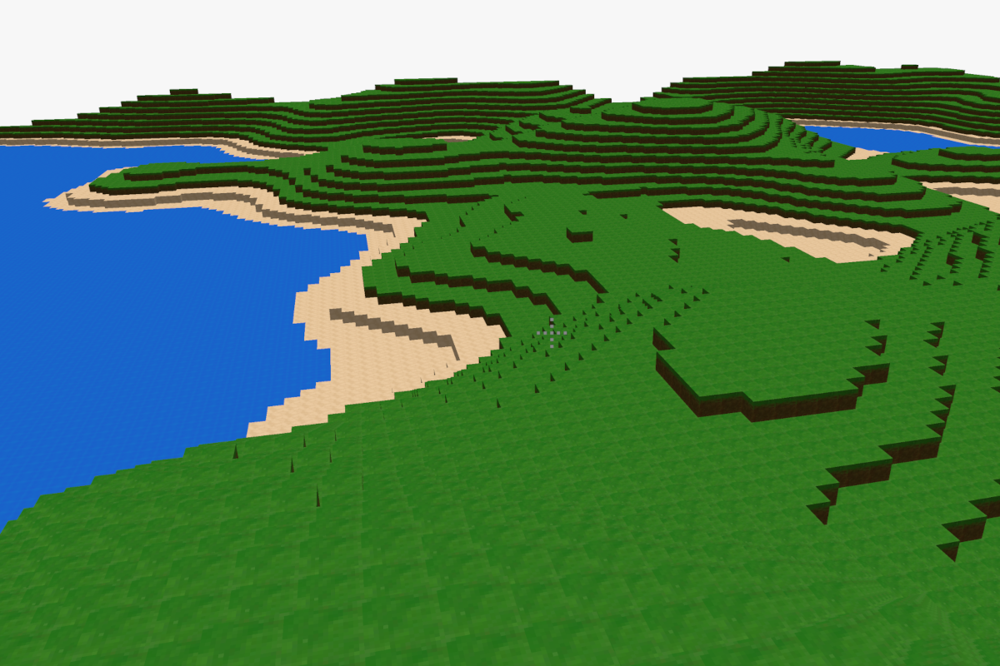

Robert Obkircher

- Github: RobertObkircher
- Born: 1999
Compilers
C++
Java
JVM
Rust
- My bachelor thesis On-Stack Replacement in the CACAO VM is about dynamically switching between different versions of machine code.
- SchokoVM is a Java bytecode interpreter.
- I contributed to the SeaOfNodes tutorial.
Graphics
-
Minecraft Clone
WebGPU
Rust
 An almost infinite 3d world that runs in your browser.
-
Ray Tracing
Rust

This image is the result of following the book Ray Tracing in One Weekend.
Misc
-
CTF Writeups
pwn
Writeups for Capture The Flag cybersecurity competitions
-
CDCL SAT Solver
Rust
My attempt to understand an algorithm from a lecture.